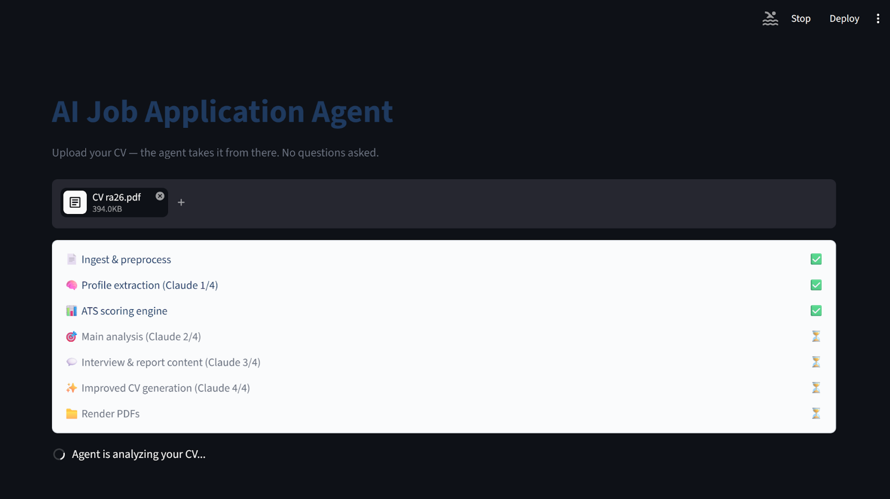
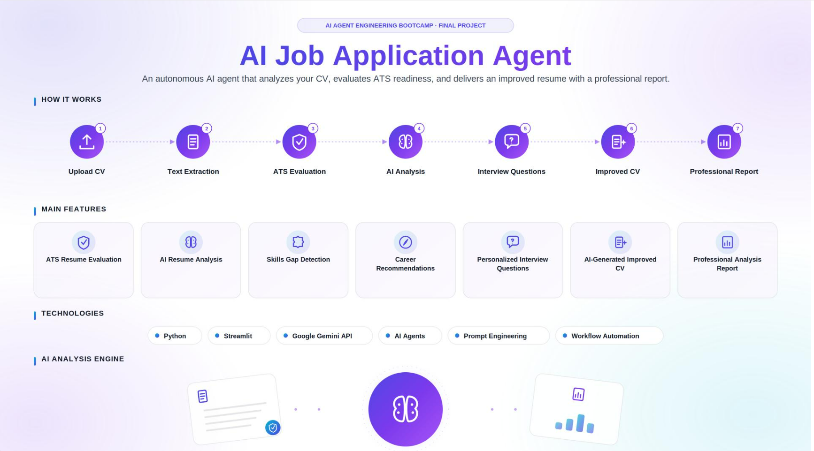

Forsah فرصة
An AI-powered career assistant that helps students, graduates and job seekers improve their application materials and understand their professional profiles.
Status: Completed projectThe repository keeps its earlier technical name, ai-job-application-agent. No live demo is published.

The problem
Job seekers often cannot tell how well their CV presents their profile or what to improve. Feedback is rarely structured or explained.
Solution and user journey
The user provides CV text. Forsah extracts and analyzes the profile, scores it, suggests careers and skills, generates interview questions, drafts an improved English CV, and produces a downloadable report.
Rule-based and LLM-assisted components
Forsah combines deterministic rules with LLM-powered analysis in a structured workflow. The ATS scoring engine is rule-based and explainable. The Google Gemini API assists with analysis, recommendations and drafting.
Features
- CV text extraction and profile analysis
- Explainable, rule-based ATS scoring
- LLM-assisted analysis with Google Gemini API
- Career and skills recommendations
- Automated interview-question generation
- Improved English CV drafting
- Downloadable career analysis reports
Technologies
PythonStreamlitGoogle Gemini APIPrompt engineeringPydanticReportLabRule-based scoring logic
Key decisions
- Rules for scoring, so every score can be explained.
- An LLM for language-heavy tasks such as recommendations and drafting.
- Pydantic to structure data, ReportLab for PDF reports, Streamlit for a simple interface.
Role: Sole Creator & Developer
I created and developed Forsah entirely on my own, from the initial idea through development and implementation. It was not a team project.
Intended value
Clear, explainable feedback that helps job seekers improve their materials.
Gallery



More projects
Forsah فرصة · Alef ألف · Solven سولفن · Why Am I Waiting? ليش أنا أنتظر؟